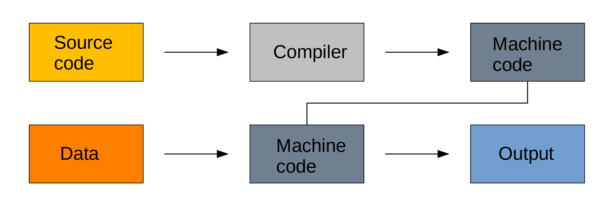
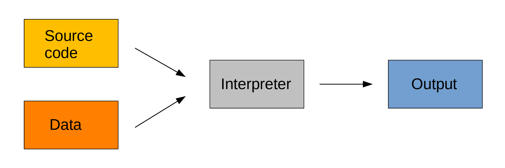

type(5)intMarie-Hélène Burle
Content from the webinar slides for easier browsing.
Programming (or coding) consists of writing a set of instructions (a program) for computers so that they perform a task.
There are many programming languages—each with its own syntax—but the core concepts apply to all languages. For this course, we will use Python.
Programs accept inputs (data) and produce outputs (transformed data).
You write code, compile it into machine code, then use this to process your data:

Compiled languages are fast. The two step process however makes prototyping less practical and these languages are hard to learn and debug.
Examples of compiled languages include C, C++, Fortran, Go, Haskell.
Interpreted languages are executed directly:

You get direct feed-back, making it easier to prototype. Interpreted languages are easy to learn and debug, but they are much slower.
Examples of interpreted languages include R, Python, Perl, and JavaScript.
Python is free and open-source, interpreted, and general-purpose.
It was created by Dutch programmer Guido van Rossum in the 80s, with a launch in 1989.
The PYPL PopularitY of Programming Language index is based on the number of tutorial searches in Google. Python has been going up steadily, reaching the first position in 2018. It is also ahead in other indices and is the language used by most of the deep learning community.
This doesn’t mean that Python is better than other languages, but it means that there are a lot of resources and a large collection of external packages.
A text editor is not the same as a word processor such as Microsoft Office Word. Word documents are not plain text documents: they contain a lot of hidden formatting and are actually a collection of files. This is not what you want to write scripts.
Examples of good text editors (free and open source):
Integrated development environments (IDEs) are software that make running a language more friendly by adding functionality and convenience tools, usually within a graphical user interface (GUI).
A popular IDE for Python is JupyterLab.
Some languages come with debugging tools that make it easier to find problems in the code.
Profilers allow you to spot bottlenecks in the execution of your code.
Benchmarking tools allow you to compare several versions of code to find which is faster.
Python is great in many respects, but it is not a fast language.
Many libraries for Python are written in faster compiled languages (e.g. C, C++, Fortran).
To speed things up more, some code or sections of code can be run in parallel (instead of serially). To do this though, you need more hardware.
You can run code using multiple CPUs (central processing unit). Some code can be accelerated using GPUs (graphical processing unit).
For very large scale projects such as very large simulations, deep learning, or big data projects, you can use supercomputers.
The simplest way to use Python is to type commands directly in the Python shell. This sends commands directly to the interpreter.
The Python shell has a prompt that looks like this:
>>>IPython is an improved shell with better performance and more functionality (e.g. colour-coding, magic commands).
The prompt looks like:
In [x]:x is the command number (e.g. for your first command, it will show In [1]:.
The IPython shell was integrated into a fancy interface, the Jupyter notebook. This later lead to a fully fledged IDE (integrated development environment) called JupyterLab which contains notebooks, a command line, a file explorer, and other functionality.
Even though JupyterLab runs in your browser, it does not use the internet: it is all run locally on your machine (browsers are software that are great at displaying HTML files, so we use them to access the web, but they can also display files from your computer).
Jupyter has probably become the most popular IDE, but it is possible to run Python in other IDE such as Emacs.
You can write your Python code in a text file with a .py extension and run the script in your terminal with:
This will execute the code non-interactively.
Many languages can have their functionality expanded by the installation of packages developed by the open source community. The potential is unlimited.
Many languages come with their own package manager.
In Python, popular package managers include pip, Conda, and the newer much faster uv.
Each language uses its own syntax.
Example:
In Python, the tab (equal to four spaces by default) has meaning, while in R, it doesn’t (it only makes it easier for people to read code).
Each language contains various data types such as integers, floating-point numbers (decimals), strings (series of characters), Booleans (true/false), etc.
Python examples:
Values can be assigned to names to create variables.
Python example:
a is now a variable containing the value 3:
A data structure is a collection of values.
Python examples:
Each type of structure has its own characteristics (necessarily homogeneous or not, mutable or not, ordered or not, etc.). This gives several data storage options, each best in different situations.
Functions are snippets of code that accomplish a specific task.
Built-in functions come with the language and are readily available. Other functions become available once a particular module or package is loaded. Finally, the user can definite their own functions.
Some functions take arguments.
Python examples:
Commands are normally run sequentially, from top to bottom, but it is possible to alter the flow of execution by creating repeats (loops) or conditional executions.
Python examples:
Most languages come with their internal documentation.
Example with Python:
Help on built-in function sum in module builtins:
sum(iterable, /, start=0)
Return the sum of a 'start' value (default: 0) plus an iterable of numbers
When the iterable is empty, return the start value.
This function is intended specifically for use with numeric values and may
reject non-numeric types.Google is often your best bet, but you need to know the vocabulary in order to ask questions.
Stack Overflow is a fantastic community question & answer website.
Over the past few years, LLMs have become increasingly performant at coding.
People use them in different ways:
In this course, I will show you how they can help you write code.